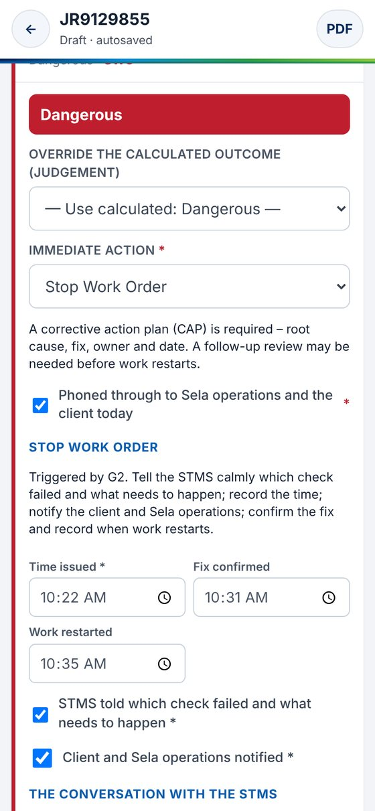

Recording the Stop Work Order and the Conversation
~1 min · narrated

Stop Work Order record
Time issued (required)
STMS told which check failed and what needs to happen
Client and Sela operations notified
Fix confirmed and work restarted (times)
The conversation with the STMS
What is working well – start with this
Fixes agreed, and who will do them
Appeal route explained (required on an attended site)
UNATTENDED SITE?
The Stop Work Order record is replaced by the on-call record: the time you phoned the contractor’s on-call contact, and whether you escalated.
If you issued a stop work order, record the time issued, confirm you told the STMS which check failed and what needs to happen, and that the client and Sela operations were notified. Add the times the fix was confirmed and work restarted. Then record the conversation with the STMS: what's working well, the fixes agreed, and that you explained the appeal route. On an unattended site, you'll record the call to the on-call contact instead.